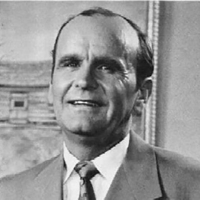

Abraham's Seed
Summary
This Message establishes the foundation of the grace covenant through Abraham's faith as the model for all believers. Brother William Branham teaches that everyone who receives Christ becomes Abraham's seed—heirs of the covenant promise—not through personal worthiness but through God's sovereign choice and predestination. The Message emphasizes that believers inherit their blessings by faith and faith alone, not by their own efforts, and must refuse to lean on natural reasoning or circumstances, instead holding to God's Word as already accomplished.
Scripture Foundation
- Genesis 12:1-4; 17:1-22; 21:1-5 — Abraham's call, separation, and the miraculous birth of Isaac—demonstrating faith that transcends human limitation and possibility.
Also referenced: Romans 4:17, Hebrews 11:12, John 6:44, Revelation 13:8, Galatians 3:29, Romans 4:19-20, John 11:40
Main Points
- Grace, Not Works, Determines the Covenant. Brother Branham contrasts the old covenant with the new covenant of grace. In the old covenant, an imperfect animal had to die so the people could live. Under grace, the perfect Lamb of God died so believers could receive healing, salvation, and all promised blessings without earning them—the price has been paid.
- You Are Predestined, Not Self-Seeking. God's grace calls believers, not the other way around. Just as God sought Adam after the Fall, not Adam seeking God, God reaches out to choose believers according to foreknowledge. Names are written in the Lamb's Book of Life before the foundation of the world; believers simply need to recognize their inheritance and claim it.
- Abraham's Absolute Separation and Faith. Abraham's first act of faith was complete separation from unbelief—he left his kindred, his father's house, and everything contrary to God's Word. This principle applies to modern believers: to receive God's blessing, one must separate from every word spoken contrary to God's promise.
- Faith Must Be Put to Work, Not Hidden. Brother Branham illustrates with the parable of the gun hanging on the wall: faith without action remains powerless. Believers must actively declare and act upon God's promises, like Abraham purchasing baby clothes twenty-five years before Isaac's birth—faith expressed through action.
- Call Things Which Are Not as Though They Were. Abraham did not waver at the promise of God; he called a barren woman "mother" and himself "father" long before conception. This demonstrates the power of speaking God's Word in faith, treating the promise as already accomplished regardless of natural circumstances.
- Endurance in Faith Grows Stronger, Not Weaker. While Abraham waited twenty-five years for Isaac's birth, he grew stronger in faith instead of weaker. In contrast, modern believers often grow discouraged within hours of prayer. True sons of Abraham maintain unwavering belief and thanksgiving, knowing God's Word will manifest in His perfect timing.
Quote
When God said so, that settles it. God said so; that settles it forever.
This statement encapsulates the entire Message. Once God speaks a promise, the matter is concluded in the spirit realm. The believer's responsibility is not to question or doubt, but to believe and act as though the promise is already fact, regardless of what natural circumstances declare.
Final Exhortation
Brother Branham calls believers to recognize their identity as Abraham's seed—heirs of God's covenant—and to live accordingly. He challenges them to abandon intellectual reasoning that contradicts God's Word, to separate themselves from unbelief, and to speak and act in faith as Abraham did. The exhortation is to put faith to work immediately, confidently claiming healing, salvation, and all covenant blessings now, knowing that God has already decreed them and Christ has paid the price. Believers are urged to maintain faith through seeming delays, just as Abraham did, remaining strong and giving glory to God.
AI-generated summary for quick reference. This is not a substitute for the full Message. Please read or listen to the complete Message for accurate study and context.